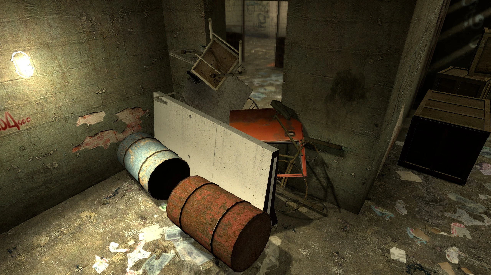
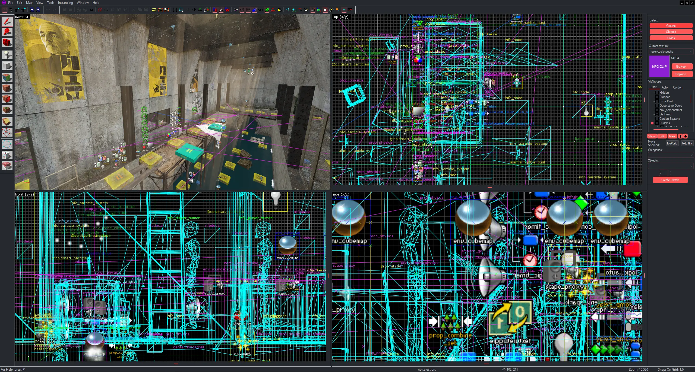
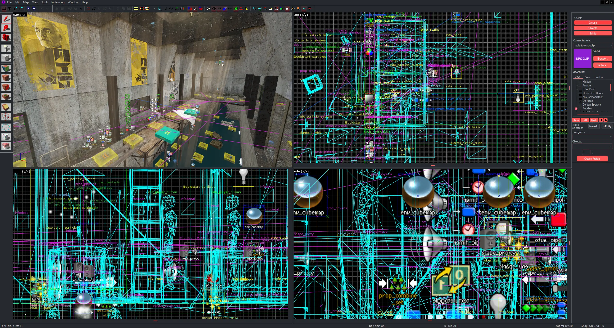

What's It About?
Premise
In Last Light, you'll face 7 waves of zombies, each growing more difficult to defeat than the last. The increase in difficulty forces the player to adapt against decreasing odds, keeping the stakes high and gameplay dynamic. Players will work as a team, gather props to build barricades and hold back zombies long enough to escape.
Once they've survived to the end of the 7th wave, you and the rest of the survivors on your team will make a run for one of several random exits placed throughout one of the game's several levels, fighting off any zombies scattered around and scrounging about looking for the brains of any survivors who happen to pass by.
It's a frantic dash to finish off the match that keeps players on edge and a great way to close out the game.
Mechanics
So, you might be wondering: "How do I stay alive for 7 waves when I'm essentially trapped in a box with zombies trying to kill me the entire time?"
You can't; this is where the game's most important mechanics come into play.
While you may not be able to hold them off forever, you can avoid the problem temporarily by building a barricade. Barricades buy you time, putting life-saving distance between yourselves and the zombies. The game's barricading mechanics are crucial to survival, and learning how to maneuver around them will be the difference between surviving to the 7th wave or getting whacked because you were standing too close to an opening.
Affixing a prop to the world with hammer and nail provides it with a healthbar, allowing zombies to destroy it by attacking it. Props incorporated into barricades that have been damaged by zombies can be repaired by hitting them with a hammer. This is usually done by the player who built the barricade; building and maintaining barricades is a complex task, so it is best for at least one player to dedicate themselves to this cause. The rest of the players use both ranged and melee weapons to fend off the zombies through gaps in the assembled barricades, thinning their numbers long enough for the barricade to withstand their attacks until the end of the 7th wave.
Humans can "phase" through barricades as though they weren't even there, allowing them to transport themselves from one side to the other. However, their movement speed is reduced considerably during this process, leaving them vulnerable to any zombies attacking the barricade as pass through it.
Teamwork is essential; each player has a role, and effective coordination is critical to ensure the team and everyone on it isn't overwhelmed.
Levels in the game are filled with physics-enabled props players can pick up, reposition, reorient and fasten to the world to build barricades with. The diversity of these props allows for much creativity; different materials have different properties and strengths, and clever players will experiment to find the most effective setups. Reinforcing barricades, setting traps and funneling enemies through chokepoints are just some of the strategies that players could use to their advantage.
Aesthetic
Stylistically, I would prefer that the game takes place in the universe of Valve Software's Half-Life 2. As mentioned above, Valve have historically been very lenient with the licensing of their Source engine and the use of their assets by other studios for the development of third-party games in Source, so I'm not too concerned about that.
If we end up pivoting to Source 2, we could certainly shift to the style of Half-Life: Alyx without compromising our vision of a Half-Life-themed game. Source 2's advancements in lighting, shading and environmental interaction would elevate the game's visuals and improve player experience.
The scenes pictured were constructed by myself with the assets from Valve titles such as Half-Life 2 and Half-Life 2: Episode One, in addition to some original assets of my own (more about the external assets under the How Is It Being Made section). They represent the tone I want to achieve: Dark, moody, filled with danger. Surviving in a world that feels lived-in and believable.
Voice Acting
When it comes to other kinds of assets, voice acting is one area that may be of concern to people interested in the project. Rest assured, there is no shortage of voice lines available to Source engine developers in the goldmine of first-party Half-Life assets available to them. Regardless, were this not the case, I and several individuals I'm familiar with are reasonably experienced with voice acting and currently possess the equipment necessary to produce the studio-quality voice recordings one would expect from a production of this caliber.
So, voice acting is an aspect of the game's development I've got on lock.
Music
I plan to have a dynamic music system for the game. What this means in simple terms is that I aim to have created a number of looping tracks to be seamlessly layered over one another by a system programmed to measure the "mood" of the game at any moment in time. For example, when combat is building up, so does the music. I believe tailored music samples and a carefully designed music system to accodomate them would accomplish this to great effect.
The music will have moments of quiet tension and high crescendos as players encounter groups of zombies or reach critical points in the game loop. The goal is to use music as a tool to build suspense, heighten emotion and provide an additional layer of sensory feedback to players, letting them know when they're in danger and when they've got a moment to rest.
How Is It Being Made?
Engine Tech

The game is built on Valve's Source engine, which brings with it a number of complications as well as
a number of benefits. Working in Source provides an opportunity to tap into a well-known and versatile
game engine, known for its (albeit somewhat dated) physics simulation. However, it does come with
challenges that any developer working in this engine will face.
Asset Acquisition
For example, Valve allows textures and materials to be taken directly from first-party Source engine
games (ones they've made), so long as they are used in commercial games running on Source (not ported
across engines) and do not contain Valve trademarks (such as characters, logos, etc.). This would allow
us to forego investing much time, effort and money into creating original assets for certain aspects
of worldbuilding when said aspects already exist in Valve's first-party Source games.
Leveraging those assets will allow us to create a world that feels familiar, immersive and true to the aesthetic of not
only the Half-Life franchise I hope to align with, but other games built on Source that I
and so many others in the space grew up playing.
Pertaining to the issue of trademarks, it would certainly be possible to create a game "taking place"
in the Half-Life universe without creating a "Half-Life game."
Avoiding trademarks will not be difficult, as the Half-Life universe does not make heavy use of
them. We can create a game with with the atmosphere of Half-Life without mentioning specific
characters like "Gordon Freeman" or "Alyx Vance."
Even if we paid absolutely no mind to the issue of trademarks, there have been licensed Source games in
the past that have paid no mind to the Half-Life intellectual property and Valve haven't paid any
mind to it at all. So I foresee no issues, and this gives us a lot of freedom in the way we approach storytelling and
worldbuilding, whilst still honoring the spirit of the games from which we draw our aesthetic inspiration.
As far as complications go, see the Potential Budget section below.
Engine Tech
The game is built on Valve's Source engine, which brings with it a number of complications as well as a number of benefits. Working in Source provides an opportunity to tap into a well-known and versatile game engine, known for its (albeit somewhat dated) physics simulation. However, it does come with challenges that any developer working in this engine will face.
Asset Acquisition
For example, Valve allows textures and materials to be taken directly from first-party Source engine games (ones they've made), so long as they are used in commercial games running on Source (not ported across engines) and do not contain Valve trademarks (such as characters, logos, etc.). This would allow us to forego investing much time, effort and money into creating original assets for certain aspects of worldbuilding when said aspects already exist in Valve's first-party Source games.
Leveraging those assets will allow us to create a world that feels familiar, immersive and true to the aesthetic of not only the Half-Life franchise I hope to align with, but other games built on Source that I and so many others in the space grew up playing.
Pertaining to the issue of trademarks, it would certainly be possible to create a game "taking place" in the Half-Life universe without creating a "Half-Life game." Avoiding trademarks will not be difficult, as the Half-Life universe does not make heavy use of them. We can create a game with with the atmosphere of Half-Life without mentioning specific characters like "Gordon Freeman" or "Alyx Vance."
Even if we paid absolutely no mind to the issue of trademarks, there have been licensed Source games in the past that have paid no mind to the Half-Life intellectual property and Valve haven't paid any mind to it at all. So I foresee no issues, and this gives us a lot of freedom in the way we approach storytelling and worldbuilding, whilst still honoring the spirit of the games from which we draw our aesthetic inspiration.
As far as complications go, see the Potential Budget section below.
Potential Budget
The history of licensed third-party games built on the Source engine is a confusing and unfortunately expensive one.
The licensing cost for third-party Source games was formerly $25,000 per title, and only applied to commercial games and/or mods. This is due to the Source engine's reliance upon the independently licensed Havok physics engine, which by itself was originally licensed for an estimated $50,000–$60,000 per title (and negotiated by Valve to a lesser price for Source titles as it was mandatory middleware for the engine's operation).
Fortunately, in 2021, the Havok licensing fee for use with Valve engines was waived in an agreement between Valve and Microsoft (the parent company of Havok). The license is now free.
There is unfortunately very little public licensing information available, as much information pertinent to the subject of budgeting can be acquired only under NDA. Most information that was leaked regarding the subject was leaked before the Havok licensing fee had been waived, so it's difficult to give reliable figures.
For a more realistic budget, assuming that our developers are working part-time jobs to support themselves, I can significantly reduce the estimates of our living expenses. Instead, I'm going to allocate a smaller stipend for core project work:
- Developer Stipends (3 developers, 18 months, part-time):
$500 per month, per developer, totaling $27,000 - Engine Tech & Misc. Expenses:
Estimated at $12,000 - Marketing & Promotion:
Estimated at $3,000 for online campaigns, social media ads and promotional events to generate pre-launch interest.
Total: $42,000
| Dev. Stipends | E. Tech & Misc. |
|---|---|
| $27,000 | |
| $12,000 | |
| $3,000 |
We could also be looking at Valve licensing Source 2 sometime in the next 5 years, which could substantially change the course of development; the radical shift in available engine technology and availability of assets from Half-Life: Alyx are certainly enticing prospects for us.
Project Timeline
Our plan is to get Last Light out within 18 months:
-
Pre-Production (3 months):
Concept development, planning and asset gathering, as well as setting up collaboration software. This phase includes brainstorming and experimenting with different ideas until we find the best ones to move forward with. -
Core Development (9 months):
Building game mechanics, level design, asset integration (engine tools) and implementation of core features. I'll focus on "bringing it to life" during this phase, putting the levels together, fleshing out the core systems (such as barricading), combat mechanics and finally ensuring the result is fun for players. -
Testing and Iteration (3 months):
Alpha testing, internal playtesting, fixing bugs and refining gameplay based on feedback. I plan to invite select playtesters to give us feedback, allowing us to get fresh perspectives and new outlooks on the game to make proper adjustments. -
Polish and Finalization (3 months):
Final bug fixes, optimization, polish, marketing preparations and preparing for release. During this phase, I want to make sure everything's running smoothly, optimize performance across the board, and apply finishing touches to make sure the game mechanics and visuals look and feel just right. I'll also ramp up our marketing and community engagement.
The timeline above is a very rough estimate and should be expected to change with unforeseen challenges or changes in scope, but it should give a somewhat realistic idea of how long each development phase should take.
It does include room for adjustment based on feedback from playtesting, or any additional features that may be proposed during development. Delivering a high-quality experience for players is our highest priority. If that comes at the expense of our pre-existing timeline, so be it. Valve put this philosophy into much better words than I ever could, so I won't twist my tongue trying to do a better job than they did.
But it's very unlikely it would. I'm confident with these estimates.
Meet the Developers
John Connor
Lead Developer, Level Designer
I started fooling around with computers at a young age, but I wasn't really any good at it until I was 17 or 18. Though programming was and generally still is my strongest suit, I have quite a lot of experience in level design from hobbyist side projects I've taken on in games built on in both Source and Source 2.
Video games are my lifeblood; there's really nothing else I know nearly as much about or can do as much with as game dev. That is to say: This project is one I am passionate about, and truly believe you should be, too.
I've spent a lot of time playing games like these, and I've spent a lot of time around others who have played games like these. I know what kind of issues we should expect developing a game like this, I have ideas for how we should tackle them and I know many good names to reach out to during the playtesting stage of development.
TBD
Assistant Developer
To deliver on all the promises I've made, I'll need at least one Assistant Developer to help me build everything. Though I've only listed one position here, if we have surplus funding after meeting our needs it will go toward hiring additional developers for this purpose.
TBD
Composer, SFX Artist
As detailed in the Music subsection, a dynamic music system is planned for the game. In order for this system to be developed, the music itself is going to be needed. To match the complexity of what I have planned, I'll need to work in close proximity to the composer and be in constant contact with them, so I'd prefer to hire an in-house Composer as compared to simply outsourcing the work by contracting one.
I'd also like to have original SFX engineered for the game if possible, and while I have a little experience in that area it probably won't be enough for a game given the scale I've envisioned and detailed here.